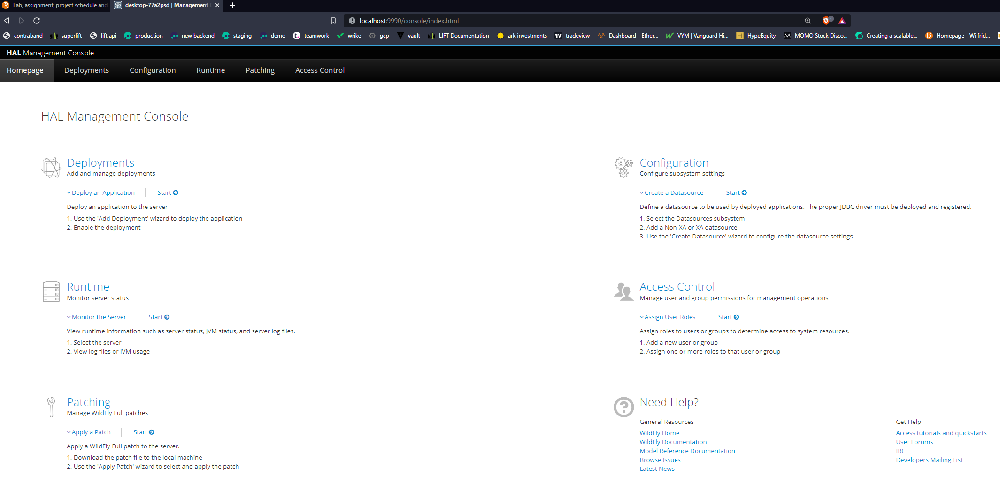
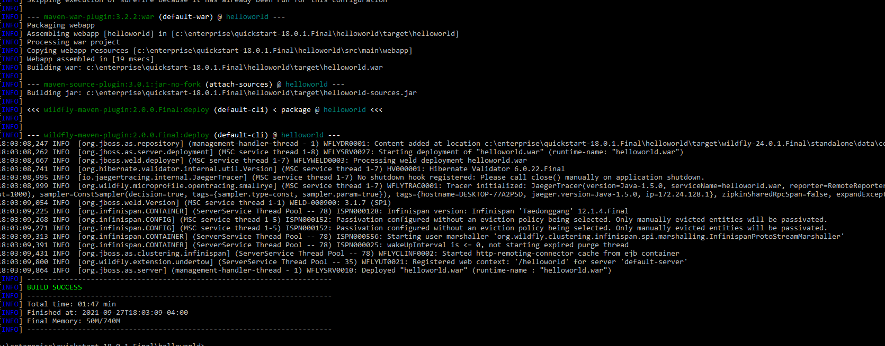
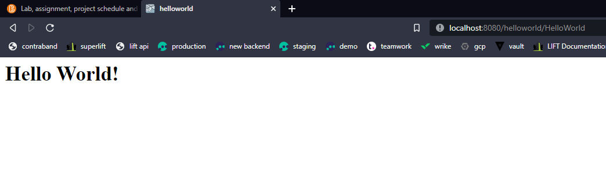
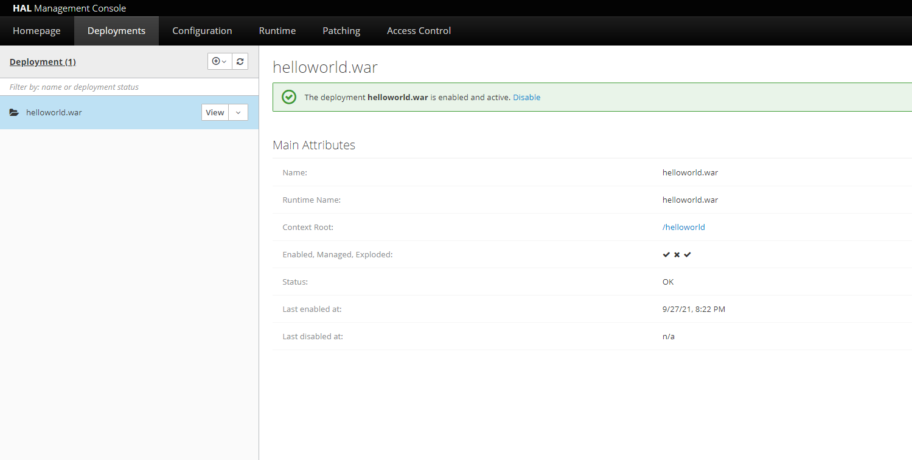
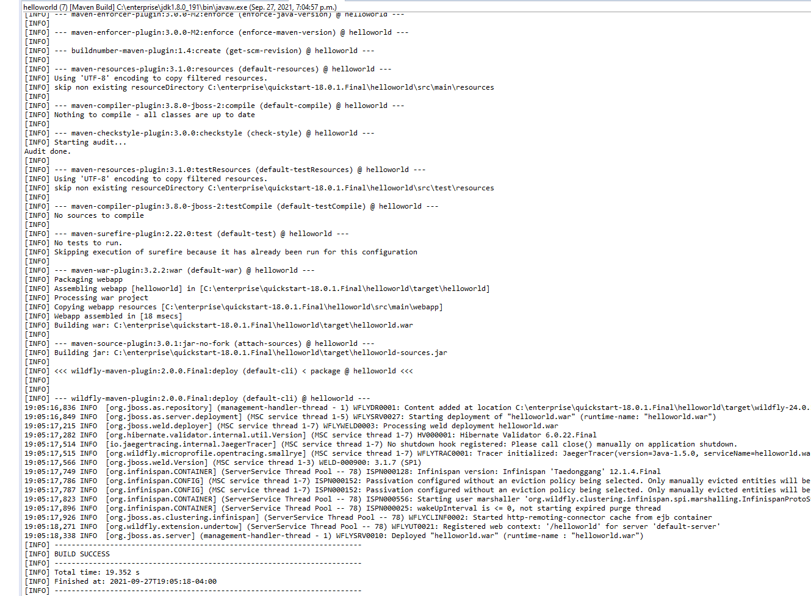
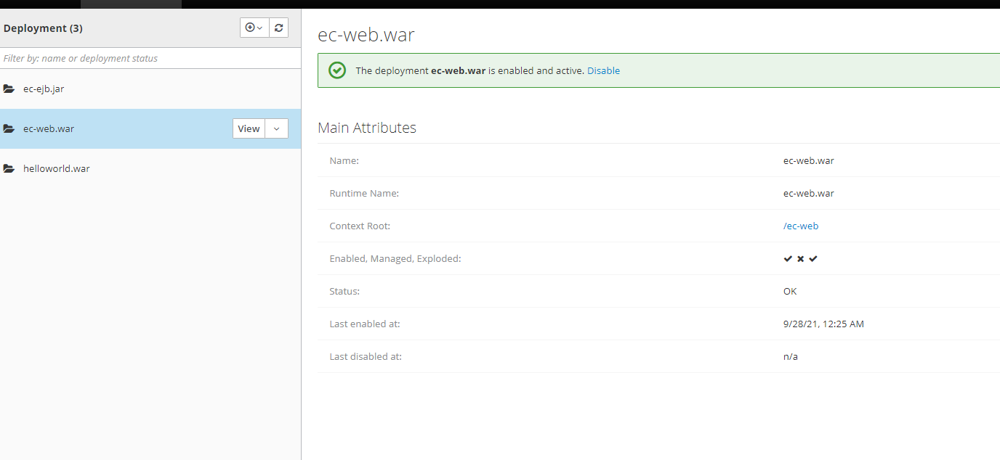
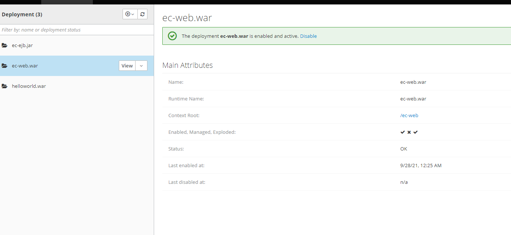

Check readme.txt for lab work statement and self-evaluation.
T1 WildFly (JBoss-AS) (lab practice)
T1.1 JBoss-AS installation
Complete? (Yes/No)
image caption
T1.2 Set admin and user
Complete? (Yes/No)
image caption
T2 Build and deploy applications by Maven (lab practice)
T2.1 Install quickstart projects
Complete? (Yes/No)
T2.2 Testing helloworld project
Complete? (Yes/No)
  
T3 JBoss-AS Maven on Eclipse JEE (lab practice)
T3.1 Eclipse Maven and external JBoss
Complete? (Yes/No)
image caption
T3.2 Run WildFly within Eclipse JEE
Complete? (Yes/No)
T4 Hand-on EJB projects (lab practice)
T4.1 Test ejb-remote project
Complete? (Yes/No)
image caption
I’m not quite sure what is happening here. The quickstart just cant install cmt for some reason. I’ve tried to configure the standalone.xml, but no luck.


 
